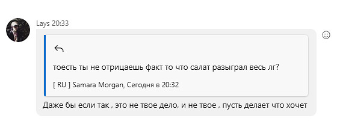

Пояснение про него
Салат - человек который ведет себя как ЧМО, и сделал свой клиент FunSkype (равняется говну)
В ЛигзГлое сделал шутку, где типо он потерял память.
Самое главное: Он подговорил сестру и написал со второго акка, как ему жаль салата.
Его сестра не отрицает этого.
Да и вообще, за ним много косяков, он тупая жирная свинота, которая несёт чушь.